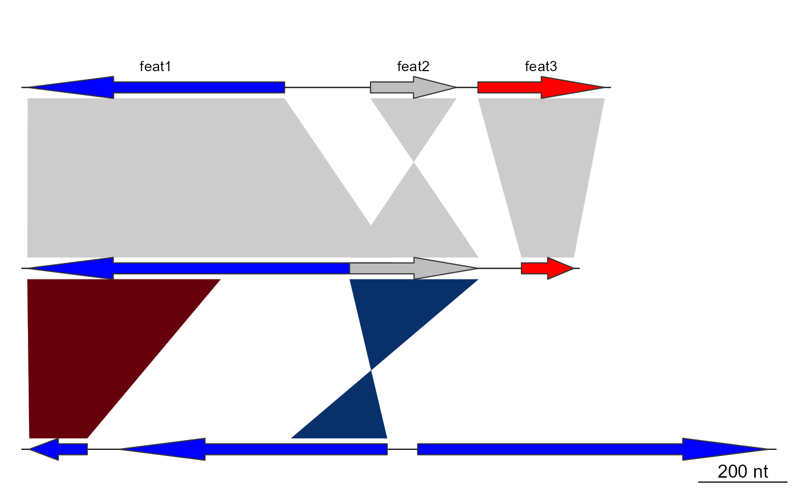
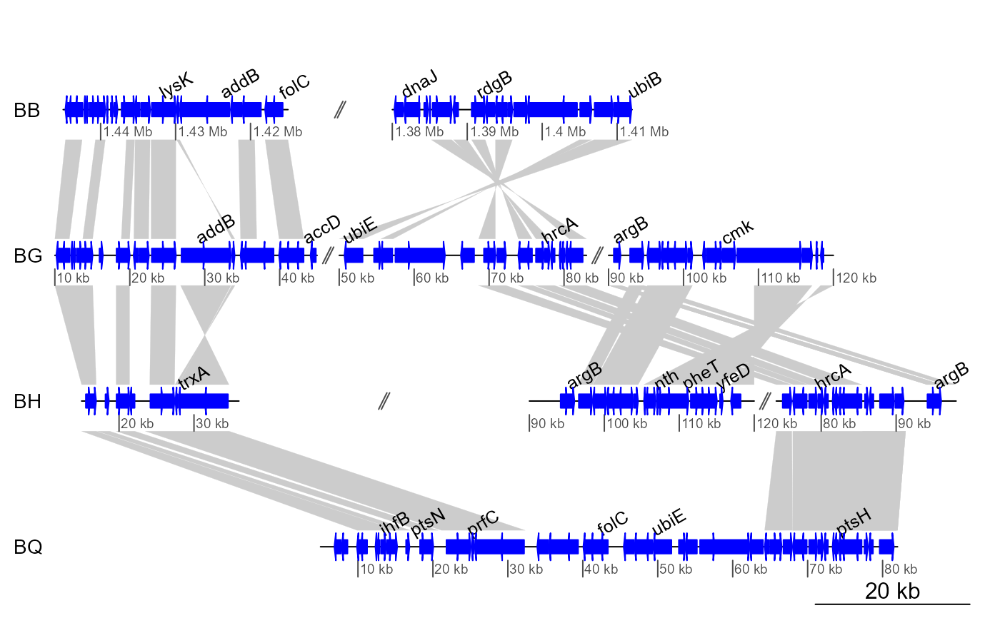
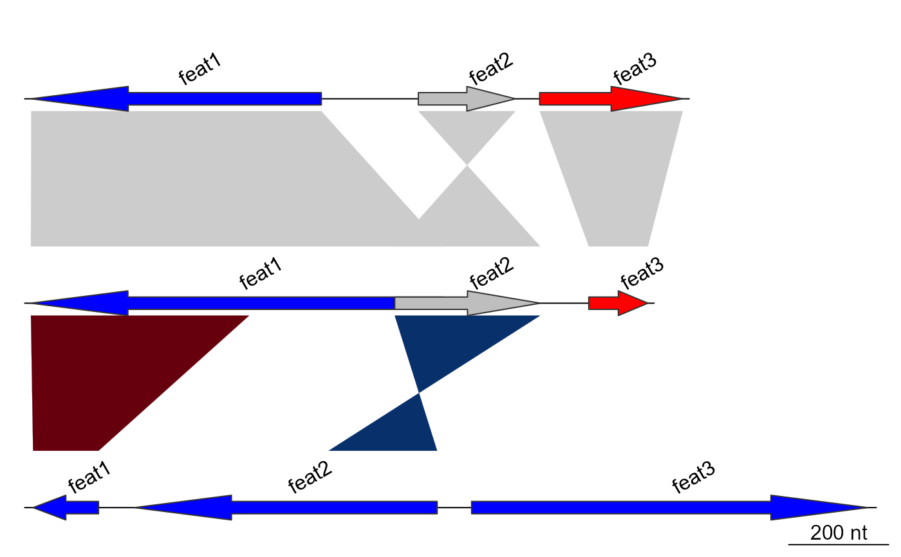

annotation class and methods
annotation.Rdannotation objects are used to describe dna_seg objects. It consists
of labels that are attached to a single position or a range.
Usage
annotation(x1, x2 = NA, text, rot = 0, col = "black")
as.annotation(df, x2 = NA, rot = 0, col = "black")
is.annotation(annotation)Arguments
- x1
A numeric vector giving the first or only position of the label.
- x2
A numeric vector of the same length as
x1orNA, providing an optional secondary position for the label.- text
A character vector of the same length as
x1, providing the text of the labels.- rot
A numeric vector of the same length as
x1, providing the rotation of the labels in degrees.- col
A character vector of the same length as
x1, providing the color of the labels.- df
A
data.frameto convert to anannotationobject. Must have at least the columnsx1andtext.- annotation
An object to test.
Value
as.annotation and annotation both return an
annotation object.
is.annotation returns a logical.
Details
An annotation object is a data.table with the columns x1, x2,
text, col, and rot. These provide the first (or only) position, an
optional second position, the text, the color, and the rotation of the
annotation, respectively.
When plotted using plot_gene_map, it will add an annotation row on top
of the corresponding DNA segment. For any given row of an annotation
object, if x2 is NA, the label will be attached to the position given by
x1. If x2 is a number instead, a range will be plotted between these
two values and the label itself will be attached in the middle of this range.
is.annotation returns TRUE if the object tested is an annotation
object.
Examples
## Loading data
data(three_genes)
dna_segs <- three_genes$dna_segs
comparisons <- three_genes$comparisons
## Calculating middle positions
mid_pos <- middle(dna_segs[[1]])
## Create first annotation
annot1 <- annotation(x1 = mid_pos, text = dna_segs[[1]]$name)
plot_gene_map(dna_segs = dna_segs, comparisons = comparisons,
annotations = annot1)

## Exploring options
annot2 <- annotation(x1 = c(mid_pos[1], dna_segs[[1]]$end[2]),
x2 = c(NA, dna_segs[[1]]$end[3]),
text = c(dna_segs[[1]]$name[1], "region1"),
rot = c(30, 0),
col = c("grey", "black"))
plot_gene_map(dna_segs = dna_segs, comparisons = comparisons,
annotations = annot2, annotation_height = 1.3)
## Using a bigger dataset from a 4-genome comparison
data(barto)
## Showing several subsegments
xlims2 <- list(c(1445000, 1415000, 1380000, 1412000),
c( 10000, 45000, 50000, 83000, 90000, 120000),
c( 15000, 36000, 90000, 120000, 74000, 98000),
c( 5000, 82000))
## Adding annotations for all genomes, allow segments to be placed out
## of the longest segment
annots <- lapply(barto$dna_segs, function(x) {
mid <- middle(x)
annot <- annotation(x1 = mid, text = x$name, rot = 30)
# removing gene names starting with "B" and keeping 1 in 4
idx <- grep("^[^B]", annot$text, perl = TRUE)
annot[idx[idx %% 4 == 0], ]
})
plot_gene_map(dna_segs = barto$dna_segs,
comparisons = barto$comparisons,
annotations = annots,
xlims = xlims2,
limit_to_longest_dna_seg = FALSE,
dna_seg_scale = TRUE)

## Annotations on all the segments
annots <- lapply(dna_segs, function(x) {
mid <- middle(x)
annot <- annotation(x1 = mid, text = x$name, rot = 30)
})
plot_gene_map(dna_segs = dna_segs,
comparisons = comparisons,
annotations = annots,
annotation_height = 1.8,
annotation_cex = 1)
